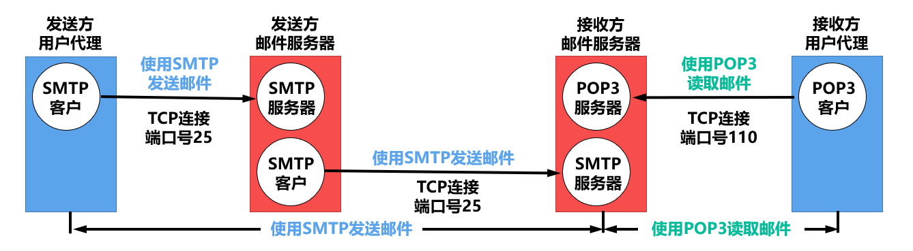

网络应用模型
客户/服务器(C/S)
在客户/服务器(Client/Server，C/S)模型中，有一个总是打开的主机称为服务器，它服务于许多来自其他称为客户机的主机请求。
其工作流程如下：
- 服务器处于接收请求的状态。
- 客户机发出服务请求，并等待接收结果。
- 服务器收到请求后，分析请求，进行必要的处理，得到结果并发送给客户机。
服务器上运行着专门用来提供某种服务的程序，可同时处理多个远程或本地客户的请求。客户程序必须知道服务器程序的地址。服务器启动后就一直不断地运行着，被动等待并接收来自各地客户的请求。因此，服务器程序不需要知道客户程序的地址。
客户/服务器模型最主要的特征是：客户是服务请求方，服务器是服务提供方。使用客户/服务器模型的常见应用包括 Web、文件传输协议(FTP)、远程登录和电子邮件等。
客户/服务器模型的主要特点还有：
- 网络中各计算机的地位不平等，服务器可通过对用户权限的限制来达到管理客户机的目的。整个网络的管理工作由少数服务器担当，因此网络的管理非常集中和方便。
- 客户机相互之间不直接通信。例如，在 Web 应用中两个浏览器并不直接通信。
- 可扩展性不佳。受服务器硬件和网络带宽的限制，服务器支持的客户机数有限。
P2P 模型
在 C/S 模型中，服务器性能的好坏决定了整个系统的性能，当大量用户请求服务时，服务器就必然成为系统的瓶颈。P2P 模型的思想是整个网络中的传输内容不再被保存在中心服务器上，每个结点都同时具有下载、上传的功能，其权利和义务都是大体对等的。
在 P2P 模型中，各计算机没有固定的客户和服务器划分。相反，任意一对计算机称为对等方，直接相互通信。
实际上，P2P 模型从本质上来看仍然使用客户/服务器模型，每个结点既作为客户访问其他结点的资源，又作为服务器提供资源给其他结点访问。
与 C/S 模型相比，P2P 模型的优点主要体现如下：
- 减轻了服务器的计算压力，消除了对某个服务器的完全依赖，可以将任务分配到各个结点上，因此大大提高了系统效率和资源利用率。
- 多个客户机之间可以直接共享文档。
- 可扩展性好，传统服务器有响应和带宽的限制，因此只能接受一定数量的请求。
- 网络健壮性强，单个结点的失效不会影响其他部分的结点。
缺点：在获取服务的同时，还要给其他结点提供服务，因此会占用较多的内存，影响整机速度。
动态主机配置协议(DHCP)
动态主机配置协议(Dynamic Host Configuration Protocol, DHCP)常用于给主机动态地分配 IP 地址，它提供了即插即用的连网机制，这种机制允许一台计算机加入新的网络和自动获取 IP 地址而不用手工参与。
DHCP 是应用层协议，它是基于 UDP 的。

DHCP 的工作原理：使用客户/服务器模型。
-
需要 IP 地址的主机在启动时就向 DHCP 服务器广播发送发现报文，这时该主机就成为 DHCP 客户。本地网络上的所有主机都能收到这个广播报文，但只有 DHCP 服务器才能回答此广播报文。
-
DHCP 服务器先在其数据库中查找该计算机的配置信息。
- 若找到，则返回找到的信息；
- 若找不到，则从服务器的 IP 地址池中取一个地址分配给该计算机。
DHCP 服务器的回答报文称为提供报文。
DHCP 服务器和 DHCP 客户的交换过程如下：
-
DHCP 客户广播“DHCP 发现”消息，试图找到网络中的 DHCP 服务器，以便从 DHCP 服务器获得一个 IP 地址。
源地址为 0.0.0.0，目的地址为 255.255.255.255。
-
DHCP 服务器收到“DHCP 发现”消息后，广播“DHCP 提供”消息，其中包括提供给 DHCP 客户机的 IP 地址。
源地址为 DHCP 服务器地址，目的地址为 255.255.255.255。
-
DHCP 客户收到“DHCP 提供”消息，若接受该 IP 地址，则广播“DHCP 请求”消息向 DHCP 服务器请求提供 IP 地址。
源地址为 0.0.0.0，目的地址为 255.255.255.255。
-
DHCP 服务器广播“DHCP 确认”消息，将 IP 地址分配给 DHCP 客户。
源地址为 DHCP 服务器地址，目的地址为 255.255.255.255。
DHCP 允许网络上配置多台 DHCP 服务器，当 DHCP 客户发出“DHCP 发现”消息时，有可能收到多个应答消息。这时，DHCP 客户只会挑选其中的一个，通常挑选最先到达的。
DHCP 服务器分配给 DHCP 客户的 IP 地址是临时的，因此 DHCP 客户只能在一段有限的时间内使用这个分配到的 IP 地址。DHCP 称这段时间为租用期。租用期的数值应由 DHCP 服务器自己决定，DHCP 客户也可在自己发送的报文中提出对租用期的要求。
DHCP 客户和服务器端需要通过广播方式进行交互，原因是在 DHCP 执行初期，客户机不知道服务器端的 IP 地址，而在执行中间，客户机并未被分配 IP 地址，从而导致两者之间的通信必须采用广播的方式。采用 UDP 而不采用 TCP 的原因也很明显：TCP 需要建立连接，若连对方的 IP 地址都不知道，则更不可能通过双方的套接字建立连接。
DHCP 是应用层协议，因为它是通过客户/服务器模式工作的，DHCP 客户向 DHCP 服务器请求服务，而其他层次的协议是没有这两种工作方式的。
域名系统(DNS)
域名系统(Domain Name System, DNS)是因特网使用的命名系统，用来把便于人们记忆的具有特定含义的主机名转换为便于机器处理的 IP 地址。相对于 IP 地址，人们更喜欢使用具有特定含义的字符串来标识因特网上的计算机。
DNS 系统采用客户/服务器模型，其协议运行在UDP之上，使用 53 号端口。
从概念上可将 DNS 分为三部分：层次域名空间、域名服务器和解析器。
层次域名空间
因特网采用层次树状结构的命名方法。
采用这种命名方法，任何一个连接到因特网的主机或路由器，都有一个唯一的层次结构名称，即域名(Domain Name)。
域(Domain)是名字空间中一个可被管理的划分。域可以划分为子域，而子域还可以继续划分为子域的子域，这样就形成了顶级域、二级域、三级域等。每个域名都由标号序列组成，而各标号之间用点（“.”）隔开。
域名中的标号有以下几点需要注意：
- 标号中的英文不区分大小写。
- 标号中除连字符（-）外不能使用其他的标点符号。
- 每个标号不超过 63 个字符，多标号组成的完整域名最长不超过 255 个字符。
- 级别最低的域名写在最左边，级别最高的顶级域名写在最右边。
顶级域名分为如下三大类：
- 国家（地区）顶级域名。例如“.cn”。
- 通用顶级域名。例如“.com”。
- 基础结构域名。用于反向域名解析，即 IP 地址反向解析为域名。
IP 地址与域名不具有一一对应的关系
若一台主机通过两块网卡连接到两个网络（如服务器双线接入），则就具有两个 IP 地址，每个网卡对应一个 MAC 地址，显然这两个 IP 地址可以映射到同一个域名上
域名服务器
域名到 IP 地址的解析是由运行在域名服务器上的程序完成的，一个服务器所负责管辖的（或有权限的）范围称为区（小于或等于“域”），一个区中的所有结点必须是能够连通的，每个区设置相应的权限域名服务器，用来保存该区中的所有主机的域名到 IP 地址的映射。
每个域名服务器不但能够进行一些域名到 IP 地址的解析，而且还必须具有连向其他域名服务器的信息。当自己不能进行域名到 IP 地址的转换时，能够知道到什么地方去找其他域名服务器。
DNS 使用了大量的域名服务器，它们以层次方式组织。没有一台域名服务器具有因特网上所有主机的映射，相反，该映射分布在所有的域名服务器上。有 4 种类型的域名服务器。
-
根域名服务器
根域名服务器是最高层次的域名服务器，所有的根域名服务器都知道所有的顶级域名服务器的域名和 IP 地址。
根域名服务器是最重要的域名服务器，不管是哪个本地域名服务器，要对因特网上任何一个域名进行解析，只要自已无法解析，就首先要求助于根域名服务器。
根域名服务器用来管辖顶级域（如.com），通常它并不直接把待查询的域名直接转换成 IP 地址，而是告诉本地域名服务器下一步应当找哪个顶级域名服务器进行查询。
-
顶级域名服务器
这些域名服务器负责管理在该顶级域名服务器注册的所有二级域名。收到 DINS 查询请求时，就给出相应的回答（可能是最后的结果，也可能是下一步应当查找的域名服务器的 IP 地址）。
-
权限域名服务器（授权域名服务器）
每台主机都必须在权限域名服务器处登记。为了更加可靠地工作，一台主机最好至少有两个权限域名服务器。实际上，许多域名服务器都同时充当本地域名服务器和权限域名服务器。权限域名服务器总能将其管辖的主机名转换为该主机的 IP 地址。
-
本地域名服务器
本地域名服务器对域名系统非常重要。每个因特网服务提供者（ISP），或一所大学，甚至一所大学中的各个系，都可以拥有一个本地域名服务器。当一台主机发出 DNS 查询请求时，这个查询请求报文就发送给该主机的本地域名服务器。
域名解析过程
域名解析是指把域名转化为 IP 地址的过程。
当客户端需要域名解析时，通过本机的 DNS 客户端构造一个 DNS 请求报文，以 UDP 数据报方式发往本地域名服务器。
域名解析有两种方式：递归查询、迭代查询。
- 主机向本地域名服务器的查询都采用递归查询。
- 本地域名服务器向其他域名服务器采用递归查询或选代查询
因为该方法给根域名服务器造成的负载过大，所以实际中几乎不使用。
本地域名服务器向根域名服务器的查询通常是采用选代查询。
当根域名服务器收到本地域名服务器发出的选代查询请求报文时，要么给出所要查询的 IP 地址，要么告诉本地域名服务器：“你下一步应当向哪个顶级域名服务器进行查询”。然后让本地域名服务器进行后续的查询（而不替本地域名服务器进行后续的查询）。
同样，顶级域名服务器收到查询报文后，要么给出所要查询的 IP 地址，要么告诉本地域名服务器下一步应当向哪个权限域名服务器查询。最后，知道了所要解析的域名的 IP 地址后，把这个结果返回给发起查询的主机。
为了提高 DNS 的查询效率，并减少因特网上的 DNS 查询报文数量，在域名服务器中广泛地使用了高速缓存，用来缓存最近查询过的域名的相关映射信息。这样，当另一个相同的域名查询到达该 DINS 服务器时，该服务器就能直接提供所要求的 IP 地址。
因为主机名和 IP 地址之间的映射不是永久的，所以 DNS 服务器将在一段时间后丢弃高速缓存中的信息。在主机中同样也很需要高速缓存，许多主机在启动时从本地域名服务器下载域名和地址的全部数据库，维护存放自己最近使用的域名的高速缓存，并且只在从缓存中找不到域名时才使用域名服务器。
文件传输协议(FTP)
工作原理
文件传输协议(File Transfer Protocol，FTP)是因特网上使用得最广泛的文件传输协议。
FTP 提供交互式的访问，允许客户指明文件的类型与格式，并允许文件具有存取权限。它屏蔽了各计算机系统的细节，因而适合于在异构网络中的任意计算机之间传送文件。
FTP 提供以下功能：
- 提供不同种类主机系统（硬、软件体系等都可以不同）之间的文件传输能力。
- 以用户权限管理的方式提供用户对远程 FTP 服务器上的文件管理能力。
- 以匿名 FTP 的方式提供公用文件共享的能力。
FTP 采用客户/服务器的工作方式，使用 TCP 可靠的传输服务。一个 FTP 服务器进程可同时为多个客户进程提供服务。
FTP 的服务器进程由两大部分组成：一个主进程，负责接收新的请求；另外有若干从属进程，负责处理单个请求。其工作步骤如下：
- 打开熟知端口 21（控制端口)，使客户进程能够连接上。
- 等待客户进程发连接请求。
- 启动从属进程处理客户进程发来的请求。从属进程对客户进程的请求处理完毕后即终止。
- 回到等待状态，继续接收其他客户进程的请求。主进程与从属进程是并发执行的。
FTP 服务器必须在整个会话期间保留用户的状态信息。特别是服务器必须把指定的用户账户与控制连接联系起来，服务器必须追踪用户在远程目录树上的当前位置。
控制连接与数据连接
FTP 在工作时使用两个并行的 TCP 连接：
- 一个是控制连接（服务器端口号 21）
- 一个是数据连接（服务器端口号 20）。
使用两个不同的端口号可以使协议更容易实现。
-
控制连接
服务器监听 21 号端口，等待客户连接，建立在这个端口上的连接称为控制连接，用来传输控制信息。
FTP 客户发出的传送请求，通过控制连接发送给服务器端的控制进程，但控制连接并不用来传送文件。
在传输文件时还可以使用控制连接（如客户在传输中途发一个中止传输的命令），因此控制连接在整个会话期间一直保持打开状态。
-
数据连接
服务器端的控制进程在接收到 FTP 客户发送来的文件传输请求后，就创建“数据传送进程”和“数据连接”。
-
数据传送进程实际完成文件的传送。
-
数据连接用来连接客户端和服务器端的数据传送进程，在传送完毕后关闭“数据传送连接”并结束运行。数据连接在每次文件传输时才建立，传输结束就关闭。
数据连接有两种传输模式：
-
主动模式PORT
客户端连接到服务器的 21 端口，登录成功后要读取数据时，客户端随机开放一个端口，并发送命令告知服务器，服务器收到 PORT 命令和端口号后，通过 20 端口和客户端开放的端口连接，发送数据。
-
被动模式PASV
PASV 模式的不同点是，客户端要读取数据时，发送 PASV 命令到服务器，服务器在本地随机开放一个端口，并告知客户端，客户端再连接到服务器开放的端口进行数据传输。
是用 PORT 模式还是 PASV 模式，选择权在客户端。简单概括为，主动模式传送数据是“服务器”连接到“客户端”的端口；被动模式传送数据是“客户端”连接到“服务器”的端口。
-
-
电子邮件
电子邮件系统组成结构
电子邮件是一种异步通信方式，通信时不需要双方同时在场。电子邮件把邮件发送到收件人使用的邮件服务器，并放在其中的收件人邮箱中，收件人可以随时上网到自己使用的邮件服务器进行读取。
一个电子邮件系统应具有三个最主要的组成构件，即
-
用户代理(User Agent, UA)
用户与电子邮件系统的接口。用户代理向用户提供一个很友好的接口来发送和接收邮件，用户代理至少应当具有撰写、显示和邮件处理的功能。通常情况下，用户代理就是一个运行在 PC 上的程序（电子邮件客户端软件），常见的有 Outlook 和 Foxmail 等。
-
邮件服务器
它的功能是发送和接收邮件，同时还要向发件人报告邮件传送的情况（已交付、被拒绝、丢失等）。邮件服务器以客户/服务器模式工作，但它必须能够同时充当客户和服务器。例如，当邮件服务器 A 向邮件服务器 B 发送邮件时，A 就作为 SMTP 客户，而 B 是 SMTP 服务器；反之，当 B 向 A 发送邮件时，B 就是 SMTP 客户，而 A 就是 SMTP 服务器。
-
邮件发送协议和读取协议
-
邮件发送协议用于用户代理向邮件服务器发送邮件或在邮件服务器之间发送邮件，如 SMTP;
SMTP 用的是“推”（Push）的通信方式，即用户代理向邮件服务器发送邮件及在邮件服务器之间发送邮件时，SMTP 客户将邮件“推”送到 SMTP 服务器。
-
邮件读取协议用于用户代理从邮件服务器读取邮件，如 POP3。
POP3 用的是“拉”（Pull）的通信方式，即用户读取邮件时，用户代理向邮件服务器发出请求，“拉”取用户邮箱中的邮件。
-

下面简单介绍电子邮件的收发过程。
- 发件人调用用户代理来撰写和编辑要发送的邮件。
- 邮件撰写完后，发件人点击“发送邮件”按钮，把发送邮件的工作全都交给用户代理来完成，就什么都不用管了。用户代理用 SMTP 把邮件传送给发送端邮件服务器。
- 发送端邮件服务器将邮件放入邮件缓存队列中，等待发送。
- 发送端邮件服务器的 SMTP 客户与接收端邮件服务器的 SMTP 服务器建立 TCP 连接，然后就把邮件缓存队列中的邮件依次发送出去。注意，邮件是直接传送给接收端邮件服务器的，而不会在互联网的某个中间邮件服务器落地。
- 运行在接收端邮件服务器中的 SMTP 服务器进程收到邮件后，将邮件放入收件人的用户邮箱，等待收件人在方便时进行读取。
电子邮件格式
一个电子邮件分为信封和内容两大部分，邮件内容又分为首部和主体两部分。
RFC822 规定了邮件的首部格式，而邮件的主体部分则让用户自由撰写。用户写好首部后，邮件系统自动地将信封所需的信息提取出来并写在信封上，用户不需要亲自填写信封上的信息。

邮件内容的首部包含一些首部行，每个首部行由一个关键字后跟冒号再后跟值组成。有些关键字是必需的，有些则是可选的。最重要的关键字是 To 和 Subject。
-
To 是必填的关键字，后面填入一个或多个收件人的电子邮件地址。
电子邮件地址的格式为：收件人邮箱名@邮箱所在主机的域名，如abc@cskaoyan.com，其中邮箱名 abc 在 cskaoyan.com 这个邮件服务器上必须是唯一的。这也就保证了该邮件地址在整个因特网上是唯一的。
-
Subject 是可选关键字，是邮件的主题，反映了邮件的主要内容。
SMTP 协议只能传送 ASCII 码文本数据，不能传送可执行文件或其他的二进制对象。SMTP 不能满足传送多媒体邮件（例如带有图片、音频或视频数据）的需要。并且许多其他非英语国家的文字（例如中文、俄文、甚至带有重音符号的法文或德文）也无法用 SMTP 传送。
为解决 SMTP 传送非 ASCII 码文本的问题，提出了多用途因特网邮件扩展(Multipurpose Internet Mail Extensions，MIME)。
MIME 并未改动 SMTP 或取代它。当发送端发送的邮件中包含有非 ASCII 码数据时，不能直接使用 SMTP 进行传送，而要通过 MIME 进行转换，将非 ASCII 码数据转换为 ASCII 码数据。之后，就可以使用 SMTP 进行传送。接收端也要使用 MIME 对接收到的 ASCII 码数据进行逆转换，以便可以得到包含有非 ASCII 码数据的邮件。
MIME 主要包括以下三部分内容：
- 5 个新的邮件首部字段，包括 MIME 版本、内容描述、内容标识、传送编码和内容类型。
- 定义了许多邮件内容的格式，对多媒体电子邮件的表示方法进行了标准化。
- 定义了传送编码，可对任何内容格式进行转换，而不会被邮件系统改变。
SMTP 和 POP3
SMTP
简单邮件传输协议(Simple Mail Transfer Protocol, SMTP)是一种提供可靠且有效的电子邮件传输的协议，它控制两个相互通信的 SMTP 进程交换信息。
因为 SMTP 采用客户/服务器模式工作，所以负责发送邮件的 SMTP 进程就是 SMTP 客户，而负责接收邮件的 SMTP 进程就是 SMTP 服务器。SMTP 用的是 TCP 连接，端口号为 25。
SMTP 通信有以下三个阶段。
-
连接建立
发件人的邮件发送到发送方邮件服务器的邮件缓存中后，SMTP 客户就每隔一定时间对邮件缓存扫描一次。如发现有邮件，就与接收方邮件服务器的 SMTP 服务器建立 TCP 连接，SMTP 服务器使用的熟知端口号为 25。
连接建立后，接收方 SMTP 服务器发出 220 Serviceready（服务就绪）。然后 SMTP 客户向 SMTP 服务器发送 HELO 命令，附上发送方的主机名。
SMTP 不使用中间的邮件服务器。TCP 连接总是在发送方和接收方这两个邮件服务器之间直接建立，而不管它们相隔多远，不管在传送过程中要经过多少个路由器。当接收方邮件服务器因故障暂时不能建立连接时，发送方的邮件服务器只能等待一段时间后再次尝试连接。
-
邮件传送
连接建立后，就可开始传送邮件。
邮件的传送从 MAIL 命令开始，MAIL 命令后面有发件人的地址。如
MAIL FROM：<fh@hit.edu.cn>。若 SMTP 服务器已准备好接收邮件，则回答 250OK。下面跟着一个或多个 RCPT 命令，每发送一个 RCPT 命令，都应有相应的信息从 SMTP 服务器返回，如 250 OK 或 550 No such user here（无此用户）。RCPT 命令的作用是，先弄清接收方系统是否已做好接收邮件的准备，然后才发送邮件，以便不至于发送了很长的邮件后才知道地址错误，进而避免浪费通信资源。获得 OK 的回答后，客户端就使用 DATA 命令，表示要开始传送邮件的内容。
正常情况下，SMTP 服务器返回的信息是 354 Start mail input；此时 SMTP 客户就可开始传送邮件内容。
-
连接释放邮件发送完毕后，SMTP 客户应发送 QUIT 命令。SMTP 服务器返回的信息是 221（服务关闭)，表示 SMTP 同意释放 TCP 连接。
POP3 和 IMAP
邮局协议(Post Ofice Protocol, POP)是一个非常简单但功能有限的邮件读取协议，现在使用的版本是 POP3。
POP 也采用客户/服务器模式，在传输层使用 TCP，端口号为 110。接收方的用户代理必须运行 POP 客户程序，而接收方的邮件服务器中则运行 POP 服务器程序。
POP 有两种工作方式：“下载并保留”和“下载并删除”。在“下载并保留”方式下，用户从邮件服务器上读取邮件后，邮件依然会保存在邮件服务器上，用户可再次从服务器上读取该邮件；而使用“下载并删除”方式时，邮件一旦被读取，就被从邮件服务器上删除。
另一个邮件读取协议是因特网报文存取协议(IMAP)，它比 POP 复杂得多，IMAP 为用户提供了创建文件夹、在不同文件夹之间移动邮件及在远程文件夹中查询邮件等联机命令，为此 IMAP 服务器维护了会话用户的状态信息。IMAP 的另一特性是允许用户代理只获取报文的某些部分，例如可以只读取一个报文的首部，或多部分 MIME 报文的一部分。这非常适用于低带宽的情况，用户可能并不想取回邮箱中的所有邮件，尤其是包含很多音频或视频的大邮件。
此外，随着万维网的流行，目前出现了很多基于万维网的电子邮件，如 Hotmail、Gmail 等。这种电子邮件的特点是，用户浏览器与 Hotmail 或 Gmail 的邮件服务器之间的邮件发送或接收使用的是 HTTP，而仅在不同邮件服务器之间传送邮件时才使用 SMTP。
万维网(WWW)
万维网(World Wide Web, WWW)是一个分布式、联机式的信息存储空间，在这个空间中：一样有用的事物称为一样“资源”，并由一个全域“统一资源定位符”（URL）标识。这些资源通过超文本传输协议（HTTP）传送给使用者，而后者通过单击链接来获取资源。
万维网的内核部分是由三个标准构成的：
- 统一资源定位符(URL)：负责标识万维网上的各种文档，并使每个文档在整个万维网的范围内具有唯一的标识符 URL。
- 超文本传输协议(HTTP)：一个应用层协议，它使用 TCP 连接进行可靠的传输，HTTP 是万维网客户程序和服务器程序之间交互所必须严格遵守的协议。
- 超文本标记语言(HTML)：一种文档结构的标记语言，它使用一些约定的标记对页面上的各种信息（包括文字、声音、图像、视频等）、格式进行描述。
万维网以客户/服务器模式工作。浏览器是在用户主机上的万维网客户程序，而万维网文档所驻留的主机则运行服务器程序，这台主机称为万维网服务器。客户程序向服务器程序发出请求，服务器程序向客户程序送回客户所要的万维网文档。
工作流程如下：
- Web 用户使用浏览器（指定 URL）与 Web 服务器建立连接，并发送浏览请求。
- Web 服务器把 URL 转换为文件路径，并返回信息给 Web 浏览器。
- 通信完成，关闭连接。
HTTP
操作过程
HTTP 定义了浏览器怎样向万维网服务器请求万维网文档，以及服务器怎样把文档传送给浏览器。
- 从层次的角度看，HTTP 是面向事务的应用层协议，它规定了在浏览器和服务器之间的请求和响应的格式与规则，是万维网上能够可靠地交换文件的重要基础。
- 从协议执行过程来说，浏览器要访问 WWW 服务器时，首先要完成对 WWW 服务器的域名解析。一旦获得了服务器的 IP 地址，浏览器就通过 TCP 向服务器发送连接建立请求。
每个万维网站点都有一个服务器进程，它不断地监听 TCP 的端口 80，当监听到连接请求后便与浏览器建立 TCP 连接。然后，浏览器就向服务器发送请求获取某个 Web 页面的 HTTP 请求。服务器收到请求后，将构建所请求 Web 页的必需信息，并通过 HTTP 响应返回给浏览器。浏览器再将信息进行解释，然后将 Web 页显示给用户。最后，TCP 连接释放。
用户单击鼠标后所发生的事件按顺序如下：
- 浏览器分析链接指向页面的 URL。
- 浏览器向 DNS 请求解析。
- 域名系统 DNS 解析出服务器的 IP 地址。
- 浏览器与该服务器建立 TCP 连接（默认端口号为 80）。
- 浏览器发出 HTTP 请求。
- 服务器通过 HTTP 响应把文件发送给浏览器。
- 释放 TCP 连接。
- 浏览器解释文件，并将 Web 页显示给用户。
实际过程涉及 TCP/IP 体系结构中应用层的 DHCP、DNS 和 HTTP，传输层的 UDP 和 TCP，网际层的 IP 和 ARP，数据链路层的 CSMA/CD 或 PPP（若涉及 ISP 接入或广域网传输）。
特点
HTTP 使用 TCP 作为传输层协议，保证了数据的可靠传输。HTTP 不必考虑数据在传输过程中被丢弃后又怎样被重传。但是，HTTP 本身是无连接的。也就是说，虽然 HTTP 使用了 TCP 连接，但通信的双方在交换 HTTP 报文之前不需要先建立 HTTP 连接。
HTTP 是无状态的。也就是说，同一个客户第二次访问同一个服务器上的页面时，服务器的响应与第一次被访问时的相同，因为服务器并不记得曾经服务过的这个客户。HTTP 的无状态特性简化了服务器的设计，使之更易支持大量并发的请求。
HTTP 既可以使用非持续连接（HTTP/1.0），也可以使用持续连接（HTTP/1.1 支持）。
-
对于非持续连接，每个网页元素对象的传输都需要单独建立一个 TCP 连接（第三次握手的报文段中梢带了客户对万维网文档的请求）。
请求一个万维网文档所需的时间是该文档的传输时间（与文档大小成正比）加上两倍往返时间 RTT（一个 RTT 用于 TCP 连接，另一个 RTT 用于请求和接收文档）。每请求一个对象都导致 2xRTT 的开销，此外每次建立新的 TCP 连接都要分配缓存和变量，使万维网服务器的负担很重。
-
所谓持续连接，是指万维网服务器在发送响应后仍然保持这条连接，使同一个客户和该服务器可以继续在这条 TCP 连接上传送后续的 HTTP 请求报文和响应报文。
HTTP/1.1 默认使用持续连接。持续连接又分为非流水线和流水线两种工作方式。
- 对于非流水线方式，客户在收到前一个响应后才能发出下一个请求，服务器在发送完一个对象后，其 TCP 连接就处于空闲状态，浪费了服务器资源。
- 对于流水线方式，客户可以连续发出对各个对象的请求，服务器就可连续响应这些请求。若所有的请求和响应都是连续发送的，则引用所有对象共计经历 1 个 RTT 延迟，而不是像非流水线方式那样，每个对象都必须有 1 个 RTT 延迟。这种方式减少了 TCP 连接中的空闲时间，提高了效率。当然，在流水线方式中，服务器在每个 RTT 连续发送的数据量还受到 TCP 发送窗口的限制。
报文结构
HTTP 是面向文本的，因此报文中的每个字段都是一些 ASCⅡ 码串，并且每个字段的长度都是不确定的。
有两类 HTTP 报文：
- 请求报文：从客户向服务器发送的请求报文。
- 响应报文：从服务器到客户的回答。
两种报文都由三个部分组成，两者格式的区别就是开始行不同。
- 开始行：在请求报文中的开始行称为请求行，而在响应报文中的开始行称为状态行。开始行的三个字段之间都以空格分隔，最后的“CR”和“LF”分别代表“回车”和“换行”。
- 首部行：用来说明浏览器、服务器或报文主体的一些信息。首部可以有几行，但也可以不使用。在每个首部行中都有首部字段名和它的值，每一行的结束都要有“回车”和“换行”。整个首部行结束时，还有一空行将首部行和后面的实体主体分开。
- 实体主体：在请求报文中一般不用这个字段，而在响应报文中也可能没有这个字段。请求报文的“请求行”有三个内容：方法、请求资源的 URL 及 HTTP 的版本。其中，“方法”是对所请求对象进行的操作，这些方法实际上也就是一些命令。